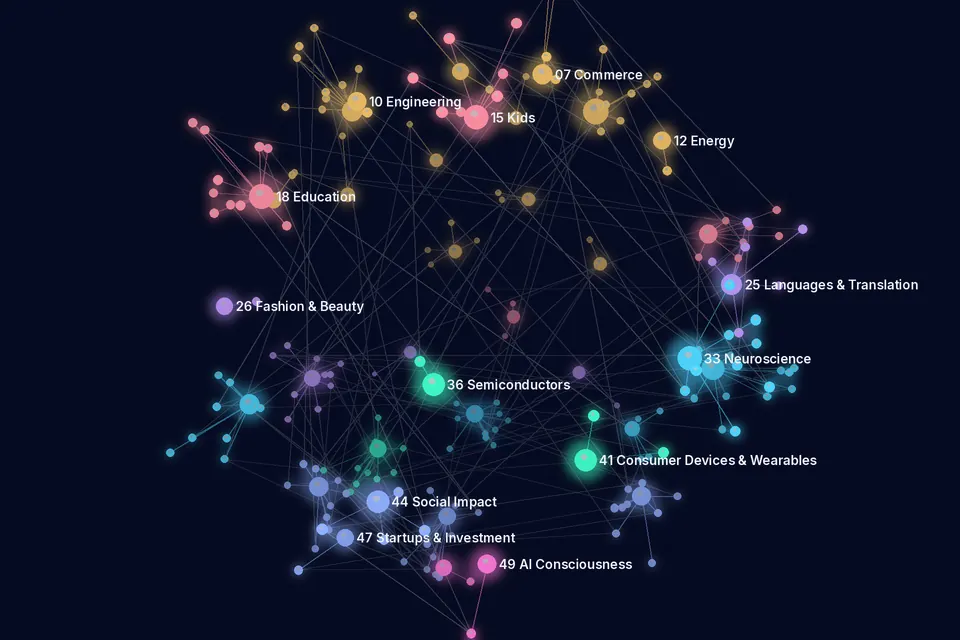

Journal of the AI Universe ✦ Research Papers Today
Research Papers Today
16 November 2026 · 330 new AI research papers in 37 of the 50 categories · Curated by Dr.P.R.K.Varma
325 peer-reviewed papers and 5 preprints, compiled automatically from PubMed, Crossref, OpenAlex, preprint servers via Crossref (Research Square, Preprints.org, SSRN and others), europepmc. Each line gives the title (linked), authors, venue, date, evidence label and identifier. Abstracts and figures are not reproduced: open the paper to read it. A listing is not an endorsement, and preprints have not been peer-reviewed. Health papers are not medical advice.
Research map in 3D
16 November 2026: the top 180 papers in 37 categories as a 3D network. Large points are categories, small points are papers (brighter = peer-reviewed), and faint lines join papers in different categories that share a topic word in their titles. Drag to rotate, pinch or use + and − to zoom, and tap a paper to open the original. Titles and links only.

Papers per category (37 categories)
01–14 Industries & Sectors 124 papers
01 AI Filmmaking
1 paper · 1 peer-reviewedProject page →- Evaluating the User Experience in a Digitally Enhanced AR Theatre Performance with VFX and Auto-CaptioningMoonisa Ahsan, Eleni Oikonomou, Olga Chatzifoti et al.ACM Symposium on Virtual Reality Software and Technology (VRST) · · Peer-reviewed · DOI 10.1145/3822517.3848706 · Open access
02 AI Agriculture
2 papers · 2 peer-reviewedProject page →- Metaheuristic-Optimized Self-Supervised Hybrid CNN–Transformer Framework for Plant Leaf Disease ClassificationRajaa Daami ResenJournal of Al-Farabi For Engineering Sciences · · Peer-reviewed · DOI 10.59746/bqqbph54 · Open access
- A MobileNet-enhanced diagnostic framework for accurate tomato leaf disease identification in smart farmingBakheet S, Almudayfir A, Farag AFrontiers in artificial intelligence · · Peer-reviewed · DOI 10.3389/frai.2026.1925384 · PMID 43031879 · Open access
03 AI Defence
1 paper · 1 peer-reviewedProject page →- An adaptive navigation algorithm for Autonomous Underwater Vehicle based on convolutional-hybrid expert network and Weighted-Kalman-Gain Disturbance-Estimating Extended Kalman FilterShijie Kuang, Yiming Yu, Xin Zhang et al.Ocean Engineering · · Peer-reviewed · DOI 10.1016/j.oceaneng.2026.129331
04 AI Healthcare
87 papers · 85 peer-reviewed · 2 preprintsProject page →Research listing only, not medical advice.
- Prognostication of end-stage heart failure using a machine learning model based on haemodynamics and cardiac energetics dataBlanco PJ, Bulant CA, Goswami R et al.European heart journal. Digital health · · Peer-reviewed · DOI 10.1093/ehjdh/ztag162 · PMID 43032679 · Open access
- Combined imaging of myocardial scar and fat using artificial intelligence-guided dual bright- and black-blood late gadolinium enhancementNarceau K, Villegas-Martinez M, Richard T et al.European heart journal. Imaging methods and practice · · Peer-reviewed · DOI 10.1093/ehjimp/qyag188 · PMID 43032887 · Open access
- Personas shift clinical action thresholds in large language modelsKlang E, Gorenshtein A, Omar M et al.npj health systems · · Peer-reviewed · DOI 10.1038/s44401-026-00121-z · PMID 43034186 · Open access
- Computed tomography derived cardiometabolic biomarkers in high-risk breast cancer using fully automated deep learning algorithmsTsou TC, Yang Z, Wang T et al.Breast cancer research and treatment · · Peer-reviewed · DOI 10.1007/s10549-026-08122-0 · PMID 43033331
- Early multibiomarker machine-learning prediction of in-hospital mortality in critically ill patients with heart failure and atrial fibrillationCevahir Alioglu, Nuray Kahraman Ay, Hasan Burak İşleyenScientific Reports · · Peer-reviewed · DOI 10.1038/s41598-026-79598-5 · Open access
- Weight-Adjusted Waist Index and Breast Cancer Prevalence in U.S. Adult Women: A Cross-Sectional NHANES Analysis (1999-2016)Li Y, Yang Z, An Y et al.Cancer medicine · · Peer-reviewed · DOI 10.1002/cam4.72505 · PMID 43034091
- Explainable federated blockchain framework for privacy preserving medical image analysis in smart healthcare systemsDileep Kumar Murala, Fernandes Dimlo UM, Sneha S. Bagalkot et al.Scientific Reports · · Peer-reviewed · DOI 10.1038/s41598-026-79256-w · Open access
- Mode-specific fetal heart rate signal dropout as a marker of perinatal asphyxia: A multicenter observational study using causal machine learning methodsKarmakar D, Mendis L, Keenan E et al.International journal of gynaecology and obstetrics: the official organ of the International Federation of Gynaecology and Obstetrics · · Peer-reviewed · DOI 10.1002/ijgo.71416 · PMID 43032935
- Continuous prediction of prolonged intensive care unit stay from longitudinal electronic health record data: development and external validationJangda M, Capone C, Villegas A et al.JAMIA open · · Peer-reviewed · DOI 10.1093/jamiaopen/ooag216 · PMID 43032252 · Open access
- Postoperative acute kidney injury in thoracic noncardiac surgery: incidence, impact on outcomes, risk and protective factors, and evolving preventive strategiesIshikawa S, Kawagoe ICurrent opinion in anaesthesiology · · Peer-reviewed · DOI 10.1097/aco.0000000000001721 · PMID 43033141
05 AI Finance
16 papers · 16 peer-reviewedProject page →Research listing only, not financial advice.
- Don’t Trust, Verify: Adaptive Multi-Agent Feature Engineering for Financial Fraud DetectionRishit Jakharia, Subhajit Tarafdar, Anand Chauhan et al.ACM International Conference on AI in Finance (ICAIF) · · Peer-reviewed · DOI 10.1145/3858063.3858906 · Open access
- Faithful by Audit: Chain-of-Thought Faithfulness in Financial DecisionsAshkan Golgoon, Giacomo Domeniconi, Samuel Atkins et al.ACM International Conference on AI in Finance (ICAIF) · · Peer-reviewed · DOI 10.1145/3858063.3858905 · Open access
- When Answers Surprise: Sequential Tone Residualization and Abnormal Returns in Earnings CallsJerrold Huang, Nathan ZhangACM International Conference on AI in Finance (ICAIF) · · Peer-reviewed · DOI 10.1145/3858063.3858890 · Open access
- AlphaLeak: What `Blind' LLM Trading Benchmarks Still SeeMinsuk Sung, Doohwi Cha, Juyeong Lee et al.ACM International Conference on AI in Finance (ICAIF) · · Peer-reviewed · DOI 10.1145/3858063.3858725 · Open access
- Auditable Financial Knowledge Graphs: Schema-Driven Construction and Intrinsic Quality EvaluationSamarth Sarin, Lovepreet Singh, Dhagash B. MehtaACM International Conference on AI in Finance (ICAIF) · · Peer-reviewed · DOI 10.1145/3858063.3858826 · Open access
- Multi-Source Temporal Memory Graph Neural Network for stock return predictionHu J, Wang Y, Luo C et al.Engineering Applications of Artificial Intelligence · · Peer-reviewed · DOI 10.1016/j.engappai.2026.116677
- DOiT: Better Money-Flow Ranking Can Coexist with Worse Account Selection in Anti-Money Laundering ReviewGwangui Hong, Seonkyu Lim, Min‐Soo KimACM International Conference on AI in Finance (ICAIF) · · Peer-reviewed · DOI 10.1145/3858063.3858842 · Open access
- From Curriculum to Rehearsal Learning: Towards Small Financial Chart VLMsVarad Srivastava, Abhay Shukla, Victor Daniel Casas HernandezACM International Conference on AI in Finance (ICAIF) · · Peer-reviewed · DOI 10.1145/3858063.3858868 · Open access
- Sylvester: A Benchmark and Empirical Study of Lifecycle-Aware Entity Resolution on Open Financial DataSheng Chang LiACM International Conference on AI in Finance (ICAIF) · · Peer-reviewed · DOI 10.1145/3858063.3858732 · Open access
- Legal and Ethical Implication Framework for Artificial Intelligence Application in Centenary Bank Uganda LimitedOkwir Bongoni Ojok, Lawrence NkamwesigaDS Journal of Artificial Intelligence and Robotics · · Peer-reviewed · DOI 10.59232/air-v4i3p101 · Open access
06 AI Law & Investigation
2 papers · 2 peer-reviewedProject page →Research listing only, not legal advice.
- Bentuk Perlindungan Hukum bagi Pencipta Desain Karakter Virtual YouTuber atas Eksploitasi Komersial Berbasis Generative Artificial IntelligenceKomang Tria Mahagayatri, Kadek Julia Mahadewi, I Gede Agus Kurniawan et al.Jurnal Mahasiswa Kreatif · · Peer-reviewed · DOI 10.59581/jmk-widyakarya.v4i6.7105 · Open access
- IMPLICAÇÕES SOBRE O USO DE IA NA EDITORIA CIENTÍFICA À LUZ DOS DIREITOS AUTORAISGilmar Gomes de Barros, Edna Karina da Silva Lira, Eliana Maria dos Santos BahiaEnancib · · Peer-reviewed · OpenAlex W7233536451
07 AI Commerce
4 papers · 4 peer-reviewedProject page →- Pre-trained Vision-Language Models for smartphone-based assessment of cucumber freshness: validation against sensory evaluationKeyhani S, Ghaitaranpour A, Esmaiili MCurrent research in food science · · Peer-reviewed · DOI 10.1016/j.crfs.2026.101617 · PMID 43034735 · Open access
- An MDSS Architecture for Customer Experience Decision Support in E-Commerce Using Data-Driven Decision-MakingAdrián Sánchez Ortega, Tania Ofelia López Zerón, Luis Alejandro Santana Valadez et al.International Journal of Research and Innovation in Social Science · · Peer-reviewed · DOI 10.47772/ijriss.2026.102500012
- Sentiment Analysis of Product Reviews Based on Deep LearningBangxin LiITM Web of Conferences · · Peer-reviewed · DOI 10.1051/itmconf/20269301019 · Open access
- GenAI literacy and perceived decision quality in e-commerce: the mediating role of perceived information overload and the moderating role of consumer involvementGuo YFrontiers in psychology · · Peer-reviewed · DOI 10.3389/fpsyg.2026.1919451 · PMID 43032098 · Open access
08 AI Journalism
2 papers · 2 peer-reviewedProject page →- OPACIDADE TECNOLÓGICA ESTRUTURAL: REGIMES DE INFORMAÇÃO NA ERA DA IARaiza Medina, Fabiano Couto Corrêa da SilvaEnancib · · Peer-reviewed · OpenAlex W7233529656
- Deep Learning‑Based Text Classification: Model Evaluation for Chinese Short‑News TextsBowen LiuITM Web of Conferences · · Peer-reviewed · DOI 10.1051/itmconf/20269301025 · Open access
10 AI Engineering
1 paper · 1 peer-reviewedProject page →- FE-GTransONet: A finite-element–informed graph transformer operator for parametric truss analysisЗ. Тран, Thang Le-Duc, Seunghye Lee et al.Computers & Structures · · Peer-reviewed · DOI 10.1016/j.compstruc.2026.108515
11 AI Robotics
4 papers · 4 peer-reviewedProject page →- Collision detection in polishing robots based on self-supervised learningYan Xing, Fengnan Zhang, Dajiang Liu et al.Scientific Reports · · Peer-reviewed · DOI 10.1038/s41598-026-78658-0 · Open access
- Improving Embodied AI Task Planning through Active Multi-modal Interaction for Instruction Ambiguity ResolutionNing ChuITM Web of Conferences · · Peer-reviewed · DOI 10.1051/itmconf/20269302009 · Open access
- Reinforcement Learning Applications in Multi-Robot Path Planning: Collaborative Mechanisms Under Communication ConstraintsJiarui YangITM Web of Conferences · · Peer-reviewed · DOI 10.1051/itmconf/20269302010 · Open access
- Embodied Artificial Intelligence: Unified Formulation, Methodology and Future DirectionsQilin LiuITM Web of Conferences · · Peer-reviewed · DOI 10.1051/itmconf/20269302022 · Open access
12 AI Energy
1 paper · 1 peer-reviewedProject page →- Artificial Intelligence in Divestiture Strategy and Strategic Decision-Making in International Oil Companies (IOCS) in NigeriaPh.D Ebikebena Redwell EMOTONGHA, MAMN Okpimah Special Aaron Emoefe (PhD)Journal of Management Research and Review · · Peer-reviewed · DOI 10.65150/ep-jmrr/v2e11/2026-06 · Open access
13 AI Transportation
1 paper · 1 peer-reviewedProject page →- A Survey of Large Foundation Models for Trajectory Planning in Autonomous DrivingRufan Bai, Tianyi Xue, Tiantian Zhou et al.Expert Systems · · Peer-reviewed · DOI 10.1111/exsy.70482 · Open access
14 AI Manufacturing
2 papers · 2 peer-reviewedProject page →- An integrative review and comprehensive methodological framework of AI-based computer vision for industrial quality control and work in progress inspectionMuttaqin Rahmat Pangaribawa, Fauzun Fauzun, Igi Ardiyanto et al.The International Journal of Advanced Manufacturing Technology · · Peer-reviewed · DOI 10.1007/s00170-026-19511-6
- The Investigation of YOLO Architectures for Defect DetectionHaodong ChenITM Web of Conferences · · Peer-reviewed · DOI 10.1051/itmconf/20269302014 · Open access
15–20 People & Life Stages 37 papers
15 AI Kids
7 papers · 7 peer-reviewedProject page →- Machine-Learning Derived Individual Risk Prediction in Congenital Heart Surgery: Development and internal validation of risk prediction models for in-hospital mortality after congenital heart surgery using data from the Pediatric Cardiac Critical Care Consortium (PC4) registryO'Byrne ML, Huang J, Faerber JA et al.American heart journal · · Peer-reviewed · DOI 10.1016/j.ahj.2026.107655 · PMID 43033839
- Explainable machine learning for identifying overweight or obesity in preschool children: A multi-regional cross-sectional study in Heilongjiang, ChinaDiao Y, Zhang X, Qiao H et al.Preventive medicine reports · · Peer-reviewed · DOI 10.1016/j.pmedr.2026.103684 · PMID 43034615 · Open access
- Social Bonds as Predictors of a Central Symptom of Problematic Short-Form Video Use Across Genders: A Network Analysis and Machine Learning StudyWang H, Dai W, Fang X et al.Journal of adolescence · · Peer-reviewed · DOI 10.1002/jad.70310 · PMID 43034885
- Diagnostic Accuracy of Large Language Models for Pediatric Chest Radiograph: Comparison With Pediatricians and RadiologistsBachiller Carnicero L, Serón Luna JM, Antón Rodríguez C et al.Pediatric pulmonology · · Peer-reviewed · DOI 10.1002/ppul.71916 · PMID 43033194
- Improving the Automatic Classification of Interviewer Questions in Avatar‐Based Child Investigative Interview Simulations: A Transformer ApproachAlessia Anna Catalano, Roberto Vadacca, Fabiana Battista et al.Legal and Criminological Psychology · · Peer-reviewed · DOI 10.1111/lcrp.70073 · Open access
- Beyond chronological age: uncovering disease-dependent variability in AI-driven pediatric bone age assessmentSchön F, Meißner C, Spieth S et al.Insights into imaging · · Peer-reviewed · DOI 10.1186/s13244-026-02477-0 · PMID 43033330
- Machine learning models for predicting plastic bronchitis in hospitalized children with Mycoplasma pneumoniae pneumonia undergoing clinically indicated bronchoscopy: a single-center retrospective studyYu S, Li Y, Liu Q et al.Frontiers in pediatrics · · Peer-reviewed · DOI 10.3389/fped.2026.1983032 · PMID 43031897 · Open access
17 AI Psychology
7 papers · 7 peer-reviewedProject page →Research listing only, not medical advice.
- Interpretable neuro-affective language understanding for psychological and psychometric assessment towards clinical-support applicationsDiego R. FariaScientific Reports · · Peer-reviewed · DOI 10.1038/s41598-026-73224-0 · Open access
- Beyond scales: Artificial intelligence, language, and behavior in suicide risk modeling-a narrative reviewQingzhong Wang, Yogesh DwivediEuropean Neuropsychopharmacology · · Peer-reviewed · DOI 10.1016/j.euroneuro.2026.113903 · Open access
- The Role of Digital Literacy in the Statistical Mediation of the Association Between Perceived Digital Leadership and Nurses' Anxiety Toward Artificial Intelligence: A Cross-Sectional Study From TürkiyeÜstün Ö, Erbir M, Evgin DInternational nursing review · · Peer-reviewed · DOI 10.1111/inr.70260 · PMID 43033004
- Deep multimodal K-fold Model for emotion and sentiment analysis in figurative languageSudipta Bhattacharya, Samarjeet Borah, Brojo Kishore MishraInternational Journal of Speech Technology · · Peer-reviewed · DOI 10.1007/s10772-026-10308-2 · Open access
- A Prompt-Based Generative AI Framework for Depression Risk Detection from TextParveen Kumari, Alpana JijjaInternational Journal of Scientific Research in Computer Science Engineering and Information Technology · · Peer-reviewed · DOI 10.32628/cseit2612611 · Open access
- Hybrid CNN Architectures for Speech Emotion Recognition in Intelligent Cockpit EnvironmentsZhisheng ZhangITM Web of Conferences · · Peer-reviewed · DOI 10.1051/itmconf/20269303003 · Open access
- Postoperative opioid-induced respiratory depression monitoring in the context of supplemental oxygen: current limitations and emerging machine-learning approachesWen J, Fu QFrontiers in medicine · · Peer-reviewed · DOI 10.3389/fmed.2026.1961833 · PMID 43031894 · Open access
18 AI Education
20 papers · 20 peer-reviewedProject page →- From Consumers to Designers: Building Rule-Based Chatbots to Reinforce Chemistry Learning and Foster Critical AI LiteracyMaka MakaridzeJournal of Chemical Education · · Peer-reviewed · DOI 10.1021/acs.jchemed.6c01077
- EduRiskNet: A Calibrated, Explainable Early-Warning Framework for At-Risk Students in Preparatory IT CoursesAnita Venugopal, Fatima Abdul Munaim Al Rawas, Ali Omar Al MinhaliSN Computer Science · · Peer-reviewed · DOI 10.1007/s42979-026-05420-8 · Open access
- Bounded generative AI in classroom career guidance: a two-site mixed-methods feasibility studySENHAO XIONG, Yushuang Wu, Haohong Nie et al.British Journal of Guidance and Counselling · · Peer-reviewed · DOI 10.1080/03069885.2026.2744381
- Teaching higher vocational students to evaluate AI career advice: TRACE scaffolding and appropriate reliance in a cluster-randomised trialSENHAO XIONG, Yushuang Wu, Haohong Nie et al.British Journal of Guidance and Counselling · · Peer-reviewed · DOI 10.1080/03069885.2026.2744378
- A deep learning–based framework for assessment of class II cavity preparations in preclinical pediatric dentistry educationElis Dayan, Mert Yağcıoğlu, Simin Kocaaydın et al.BMC Medical Education · · Peer-reviewed · DOI 10.1186/s12909-026-10814-6 · Open access
- Temporal deep learning and multitask learning offer no advantage over tree ensembles for early warning of student course outcomesHaili Qin, Zhang Chuanxia, Linkai qiScientific Reports · · Peer-reviewed · DOI 10.1038/s41598-026-80425-0 · Open access
- When do students seek AI help? Exploring within-person and between-person differencesRichard Pak, Anne Collins McLaughlin, Ericka M. Rovira et al.Journal of Psychology and AI · · Peer-reviewed · DOI 10.1080/29974100.2026.2763223 · Open access
- GENERATIVE AI–POWERED INTELLIGENT TUTORING SYSTEMS IN SCHOOL EDUCATION: OPPORTUNITIES FROM A SYSTEMATIC REVIEWJuvitsa Plaza-Santillán, David Mauricio, Luis Rivera et al.Veredas do Direito Direito Ambiental e Desenvolvimento Sustentável · · Peer-reviewed · DOI 10.18623/rvd.v23.8895 · Open access
- AI-Driven Adaptive Learning for Personalized Higher Education E-LearningJarudin Wastira, Prajna Ayu Tasya Zatira, DediInternational Conference on Education Research · · Peer-reviewed · DOI 10.34190/icer.3.1.5557 · Open access
- Artificial Intelligence in Malaysian Primary Special Education: A PRISMA-Guided Systematic Review of Teaching and Learning PracticesZaimi Muhammad, Rafidah MohamadInternational Journal of Research and Innovation in Social Science · · Peer-reviewed · DOI 10.47772/ijriss.2026.101000645 · Open access
19 AI Work & Employment
3 papers · 3 peer-reviewedProject page →- Worker-independent multimodal physiological fatigue detection in industrial workers using a domain adaptation network with multi-scale maximum mean discrepancySanchita Paul, Rupa VermaScientific Reports · · Peer-reviewed · DOI 10.1038/s41598-026-75814-4 · Open access
- Age bias in resume screening: are HR professionals more biased than ChatGPT?Maaike Schellaert, Eva Derous, Janneke K. Oostrom et al.Journal of Business and Psychology · · Peer-reviewed · DOI 10.1007/s10869-026-10164-6
- Artificial Intelligence in Administrative Functions: A 2026 Systematic Literature Review of Adoption, Applications, Efficiency, Decision-Making, and Human–AI CollaborationIta Safriza Ahmad Safri, Nor Hasmida Othman, Nur Nadirah Othman et al.International Journal of Research and Innovation in Social Science · · Peer-reviewed · DOI 10.47772/ijriss.2026.101000580 · Open access
21–29 Culture & Belief 19 papers
24 AI Literature
1 paper · 1 preprintProject page →- Breaking the contract: Imagining the reader in online content on synthetic creative fiction book writingMerga MKSocArXiv · · Preprint · DOI 10.31235/osf.io/jdn8b · Open access
25 AI Languages & Translation
6 papers · 6 peer-reviewedProject page →- Assessing AI-Driven Translation of Arabic Legal Texts: Developing a Quality Evaluation Framework through Comparative Human–Machine AnalysisHussein Al-Bo'ul, Zakaryia Almahasees, Islam HusienatInternational Journal of Translation and Interpretation Studies · · Peer-reviewed · DOI 10.32996/ijtis.2026.6.6.4 · Open access
- Chinese Text Classification in Low-Resource Settings Using Pre-trained Transformer ModelsYixuan LiuITM Web of Conferences · · Peer-reviewed · DOI 10.1051/itmconf/20269301023 · Open access
- ARTIFICIAL INTELLIGENCE APPLICATIONS FOR IMPROVING PRONUNCIATION SKILLS OF AUTISTIC PATIENTS: A CRITICAL REVIEWGhadeer Alaa, Zaid Abdi Alkareem Alyasseri, Ali Hilal AliKufa Journal of Engineering · · Peer-reviewed · DOI 10.30572/2018/kje/170431 · Open access
- Self-Preference or Position Bias? A Controlled Multilingual Study of Evaluation Bias in LLM-as-Judge Pairwise ComparisonTomáš Brückner, Filip Vencovský, Oleg SvatošActa Informatica Pragensia · · Peer-reviewed · DOI 10.18267/j.aip.336 · Open access
- A Comparative Evaluation of Afribert Base and Afribert Large for Hausa Hate Speech DetectionBashir Idris Sulaiman, Muhammad Aminu AhmadFUDMA Journal of Sciences · · Peer-reviewed · DOI 10.33003/fjs-2026-1023-6523 · Open access
- L’italiano generato dai modelli linguistici: una (nuova) varietà di lingua?Massimo Cerruti, Anna-Maria De CesareLinguistik Online · · Peer-reviewed · DOI 10.13092/vm9ets09 · Open access
26 AI Fashion & Beauty
1 paper · 1 peer-reviewedProject page →- Class-Center Regularized Conditional Variational Autoencoder for Controllable Fashion-MNIST GenerationKairui TongITM Web of Conferences · · Peer-reviewed · DOI 10.1051/itmconf/20269301016 · Open access
27 AI Travel & Hospitality
1 paper · 1 peer-reviewedProject page →- Commercial transparency in generative AI hotel recommendations: an exploratory multi-platform auditMingzhuo Wang, Chi Zhang, Ting YuCurrent Issues in Tourism · · Peer-reviewed · DOI 10.1080/13683500.2026.2763613
29 AI Gaming & Immersive Worlds
10 papers · 10 peer-reviewedProject page →- Vibe Coding XR: Accelerating AI + XR Prototyping with XR Blocks and GeminiRuofei Du, Benjamin Hersh, David Li et al.ACM Symposium on Virtual Reality Software and Technology (VRST) · · Peer-reviewed · DOI 10.1145/3822517.3848668 · Open access
- I'm Feeling Different: Uncertainty-Aware Cross-Domain Cognitive Load Prediction in Virtual RealityNasim Ahmed, Rifatul IslamACM Symposium on Virtual Reality Software and Technology (VRST) · · Peer-reviewed · DOI 10.1145/3822517.3848682 · Open access
- TrojanXR: Hidden Cognitive Attacks Against AI-Powered XR Assistants: Implications for User Cognition and PerformanceIstiak Ahmed, Ripan Kumar Kundu, Khaza Anuarul HoqueACM Symposium on Virtual Reality Software and Technology (VRST) · · Peer-reviewed · DOI 10.1145/3822517.3848718 · Open access
- AmbiXR: Adaptive Visual Syntax for Resolving Ambiguous Instructions in LLM-Assisted XR AuthoringAkira Murakami, Kodai Hatakeyama, 凌 大岡 et al.ACM Symposium on Virtual Reality Software and Technology (VRST) · · Peer-reviewed · DOI 10.1145/3822517.3849962 · Open access
- Harnessing Vision-Language Models for Perceptual Quality Assessment and Autonomous Content Adjustment in Augmented RealityElias Rotondo, Lin Duan, Yanming Xiu et al.ACM Symposium on Virtual Reality Software and Technology (VRST) · · Peer-reviewed · DOI 10.1145/3822517.3848685 · Open access
- KIARA: AI-Assisted Authoring of Augmented Reality Assembly Instructions from Technical DocumentationYannick Klein, Manas Raskar, Leon Paul Mondrian Munz et al.ACM Symposium on Virtual Reality Software and Technology (VRST) · · Peer-reviewed · DOI 10.1145/3822517.3849973 · Open access
- Remembering Is Not the Same as Feeling Personal: Evaluating Memory Architectures for LLM-Driven VR Embodied Conversational AgentsYoungcheol Hwang, Haejun Kim, Jiyeong Park et al.ACM Symposium on Virtual Reality Software and Technology (VRST) · · Peer-reviewed · DOI 10.1145/3822517.3848656 · Open access
- SpaceBudget: Space-Conditioned LLM Authoring of Object Information Panels in Mixed RealityPhil Joong Kim, Trung Thanh Do, Soo-Mi ChoiACM Symposium on Virtual Reality Software and Technology (VRST) · · Peer-reviewed · DOI 10.1145/3822517.3849909 · Open access
- Lightweight Interactive Narrative AI Technologies for Independent Games: Design and ImplementationZiqian Yao, Haocheng Zhao, Jiarui ZhouITM Web of Conferences · · Peer-reviewed · DOI 10.1051/itmconf/20269303012 · Open access
- Development and Evaluation of an LLM-NPC Dialogue Generation Method with Enhanced Character for Sandbox Narrative Games赵天铎ITM Web of Conferences · · Peer-reviewed · DOI 10.1051/itmconf/20269301013 · Open access
30–35 Science 87 papers
30 AI Research & Innovation
34 papers · 34 peer-reviewedProject page →- A lightweight graph neural network with decoupled static and dynamic representations for temporal link prediction in social networksLihong Han, Mingming Li, Hsieh MengYen et al.Scientific Reports · · Peer-reviewed · DOI 10.1038/s41598-026-77774-1 · Open access
- Heterogeneous knowledge distillation via architecture-aware reinforcement learningYibo Yang, Huilong Fan, Zeng QiaScientific Reports · · Peer-reviewed · DOI 10.1038/s41598-026-76383-2 · Open access
- Generalization performance improvement of artificial intelligence deep reinforcement learning algorithms for large-scale high-dimensional decision makingHanyu ZhangDiscover Applied Sciences · · Peer-reviewed · DOI 10.1007/s42452-026-09894-2 · Open access
- Heuriskryptes framework for identifying covert channels in neural architecturesShuchi Sethi, Sheikh Junayed Ahmed, Sakshi Sakshi et al.Scientific Reports · · Peer-reviewed · DOI 10.1038/s41598-026-74704-z · Open access
- MQViT-OSR: geometric-aware vision transformer for omnidirectional super resolution with multiquadric interpolationPrathibha S Nair, K. MaharajanThe Imaging Science Journal · · Peer-reviewed · DOI 10.1080/13682199.2026.2754668 · Open access
- From unsupervised property clustering to supervised production-condition-based classification of pyrolyzed biochar: A machine learning framework with independent experimental validationGuo X, Wen S, Yin Z et al.Bioresource technology · · Peer-reviewed · DOI 10.1016/j.biortech.2026.136243 · PMID 43033993
- AFMNet: Adaptive feature matching network for few-shot strip steel surface defect segmentationZhou X, Wang X, Wang G et al.Neural networks : the official journal of the International Neural Network Society · · Peer-reviewed · DOI 10.1016/j.neunet.2026.109887 · PMID 43033643
- Machine learning-guided structure-reactivity modeling of lignin depolymerization by high resolution mass spectrometryWang Z, Gao Y, Roell G et al.Bioresource technology · · Peer-reviewed · DOI 10.1016/j.biortech.2026.136245 · PMID 43033996
- Surrogate-assisted multi-objective structural optimization of a permanent-magnet bridged reluctance actuatorJinfeng Sun, Yunlang Xu, Xuchu Jiang et al.Scientific Reports · · Peer-reviewed · DOI 10.1038/s41598-026-76529-2 · Open access
- A Forward–Inverse Dual-Constrained Transformer Framework for Shear-Wave Velocity Inversion from Rayleigh-Wave Dispersion李建平, Ziyi Wang, Renwei Ding et al.Geophysical Journal International · · Peer-reviewed · DOI 10.1093/gji/ggag495 · Open access
32 AI Biotechnology
27 papers · 27 peer-reviewedProject page →- HGS-BioAbductor: hypergraph-based explainable survival modelling and LLM-based biological hypothesis abductionYupeng Chen, Qingyuan Zhang, Pei Jiang et al.npj Precision Oncology · · Peer-reviewed · DOI 10.1038/s41698-026-01764-9 · Open access
- Access to clinical cancer genomics and precision oncology-based care in North AmericaKumar P, Salawu A, Demichelis-Gómez R et al.Lancet regional health. Americas · · Peer-reviewed · DOI 10.1016/j.lana.2026.101689 · PMID 43032513 · Open access
- Microplastics (MPs)-associated chemical components are associated with hepatocellular carcinoma (HCC) progression via genomic instability and spatial microenvironment remodeling: A study based on integrated multi-omics analysisChen Y, Yao H, Yu Y et al.Biochemical and biophysical research communications · · Peer-reviewed · DOI 10.1016/j.bbrc.2026.154872 · PMID 43033798
- Advanced drug delivery strategies for overcoming tumor-mediated molecular hijacking: Emerging nanotherapeutics, advanced biotherapeutics, and artificial intelligenceKumar V, Batra P, Das N et al.Drug delivery and translational research · · Peer-reviewed · DOI 10.1007/s13346-026-02237-z · PMID 43034267
- Computational analysis of KLF6/PDE4B-associated ferro-aging signatures and candidate drugs in benign prostatic hyperplasiaLiu T, Chen X, Zheng JBiochemical and biophysical research communications · · Peer-reviewed · DOI 10.1016/j.bbrc.2026.154857 · PMID 43033799
- From oil biosynthesis to precision breeding: Genetic improvement of fatty acid composition in oilseed cropsShen W, Liu Y, Wang Z et al.Progress in lipid research · · Peer-reviewed · DOI 10.1016/j.plipres.2026.101400 · PMID 43033895
- Integrative transcriptomic and machine learning analysis identifies sPLA2-family genes as key regulators and biomarkers in preterm brain injuryChen S, Cheng M, Li M et al.Journal of chromatography. B, Analytical technologies in the biomedical and life sciences · · Peer-reviewed · DOI 10.1016/j.jchromb.2026.125360 · PMID 43033512
- Rapid identification of potent CD38 inhibitors via integrated AI- and structure-based methodsLiao TJ, Liu Y, Zhong S et al.Computational biology and chemistry · · Peer-reviewed · DOI 10.1016/j.compbiolchem.2026.109534 · PMID 43033507
- Viro-BERT: Whole-Genome Attention for Robust Viral Pathogen Classification from Next-Generation Sequencing DataDhahbi S, Bilal A, Alam TM et al.Virus research · · Peer-reviewed · DOI 10.1016/j.virusres.2026.199838 · PMID 43033921
- Single-cell counting reveals a modest, nutrient-dependent growth advantage of early Pseudomonas fluorescens biofilms over planktonic cellsBrink J, Hiebner DW, Casey EBiofilm · · Peer-reviewed · DOI 10.1016/j.bioflm.2026.100408 · PMID 43034731 · Open access
33 AI Neuroscience
9 papers · 9 peer-reviewedProject page →- Potter-Optimized Multiscale Bayesian Gated Axial Quantized Attention Network for Robust Multichannel EEG-ECG-Based Seizure PredictionShobana G, Baskaran KRDevelopmental neurobiology · · Peer-reviewed · DOI 10.1002/dneu.70073 · PMID 43033403
- From features to digital biomarkers: EEG-fNIRS classification pipelines for brain monitoringKahankova RV, Vinklerova A, Zygarlicki J et al.NeuroImage · · Peer-reviewed · DOI 10.1016/j.neuroimage.2026.122344 · PMID 43033973 · Open access
- Diagnostic accuracy and reliability of susceptibility map-weighted imaging in patients with clinically uncertain parkinsonian syndromesWallert ED, Beudel M, Keil VC et al.European radiology experimental · · Peer-reviewed · DOI 10.1186/s41747-026-00832-w · PMID 43034231
- Tumor-masked structural connectomics for assessing tract-specific white matter disruption associated with glioma aggressiveness: an interpretable machine learning pilot studyFranco P, Montalba C, Espinoza I et al.Neuroradiology · · Peer-reviewed · DOI 10.1007/s00234-026-04232-0 · PMID 43033259
- AI-powered human action recognition of functional activities in stroke: a systematic reviewElisa Masi, Pietro Deledda, Martina D’Arienzo et al.Artificial Intelligence Review · · Peer-reviewed · DOI 10.1007/s10462-026-11753-w · Open access
- Development and validation of an ML-driven risk prediction model for stroke-heart syndrome after acute ischemic strokeLong Q, Liu Z, Guo Q et al.Heart & lung : the journal of critical care · · Peer-reviewed · DOI 10.1016/j.hrtlng.2026.103007 · PMID 43033570
- End-to-end deep learning for identifying Alzheimer's disease signatures in spectral fluorescence imaging of normal-appearing brain regions in 5xFAD miceSouza R, Stepanchuk AA, Brandt PJ et al.Journal of medical imaging (Bellingham, Wash.) · · Peer-reviewed · DOI 10.1117/1.jmi.13.6.064001 · PMID 43034324 · Open access
- Deep Learning-based Methods for Brain Tumor Magnetic Resonance Imaging SegmentationYangbin PiaoITM Web of Conferences · · Peer-reviewed · DOI 10.1051/itmconf/20269303026 · Open access
- Construction of a machine learning-based risk prediction model for acute stroke in maintenance hemodialysis patientsYing J, Cai G, Chen L et al.PeerJ · · Peer-reviewed · DOI 10.7717/peerj.21894 · PMID 43034765 · Open access
34 AI Environment
13 papers · 12 peer-reviewed · 1 preprintProject page →- Integrating multi-source UAV LiDAR and hyperspectral data for fine-scale vegetation classification in mining areas of the Yellow River BasinGuo Wang, Cheng Wang, Hongtao Wang et al.International Journal of Digital Earth · · Peer-reviewed · DOI 10.1080/17538947.2026.2748745 · Open access
- Understanding morphological effects of green landscapes on watershed water quality across ChinaYang W, Zuo Y, Lin J et al.Water research · · Peer-reviewed · DOI 10.1016/j.watres.2026.127288 · PMID 43033761
- Roadway safety during active wildfires: A machine-learning analysis of crash occurrence and injury severityGorzin F, Nayeri O, Shabanpour RAccident; analysis and prevention · · Peer-reviewed · DOI 10.1016/j.aap.2026.108868 · PMID 43033558
- Estimating PM2.5 Concentration in Ho Chi Minh City Using Sentinel-5P and Machine Learning on Google Earth Engine (GEE)Nguyen NHT, Duong Thi T, Tran Thi V et al.Bulletin of environmental contamination and toxicology · · Peer-reviewed · DOI 10.1007/s00128-026-04365-1 · PMID 43034243
- The global diffusion of artificial intelligence exposes an efficiency-transformation gapWu M, Liu W, He Z et al.Environmental science and ecotechnology · · Peer-reviewed · DOI 10.1016/j.ese.2026.100784 · PMID 43034684 · Open access
- Beyond single-stage classification: A hybrid AI-expert validation framework for environmental monitoring of European food waste preventionGarzón-Alfonso W, Amador-Cervera M, Cruz-Elejalde H et al.J Environ Manage · · Peer-reviewed · DOI 10.1016/j.jenvman.2026.131313 · PMID 43033653
- A physics-informed multi-agent framework for real-time seismic health monitoring and structural safety managementArtem ZaitsevSmart Construction and Sustainable Cities · · Peer-reviewed · DOI 10.1007/s44268-026-00104-x · Open access
- SegFormer-adaptive random forest for fine-grained classification of desert land coverYanjun Tian, Yongqi Sun, HOU Senlei et al.International Journal of Digital Earth · · Peer-reviewed · DOI 10.1080/17538947.2026.2706241 · Open access
- Toward a species-based approach to One Health by leveraging large language modelsAntoine Adde, François Keck, Florian AltermattNext Sustainability · · Peer-reviewed · DOI 10.1016/j.nxsust.2026.100590 · Open access
- Ontology and LLM-based Extraction of Wastewater Unit Process Data from Permit Documents for Improved Sector-Level Cost and Emissions AnalysisDaly Wettermark, Constance Rouffet, Fletcher Chapin et al.Environmental Engineering Science · · Peer-reviewed · DOI 10.1177/15579018261504213
35 AI Quantum Computing
4 papers · 4 peer-reviewedProject page →- Agentic Multi-Agent Reinforcement Learning for Adaptive and Quantum Aware Network RoutingFernaz Narin Nur, Selina Sharmin, Nazmun Nessa Moon et al.The International journal of networked and distributed computing · · Peer-reviewed · DOI 10.1007/s44227-026-00135-x · Open access
- Entanglement-controlled quantum contrastive embedding learning for robust natural language processing: an adaptive fidelity-aware frameworkB. Satyanarayana Murthy, Yogini Dilip Borole, Sowmya V et al.Biomedical Signal Processing and Control · · Peer-reviewed · DOI 10.1016/j.bspc.2026.111833
- Quasi-quantum computing for constraint-aware optimization of laser welding parameters in aluminum alloysKohsuke Kakuda, Shunsuke Kanai, Yoshishige OkunoMRS Advances · · Peer-reviewed · DOI 10.1557/s43580-026-01820-3 · Open access
- AI-Augmented Quantum Key Distribution for Cloud Data Security: A Simulation Study of Aggregate Versus Block-Wise Eavesdropping DetectionAkheel MohammadInternational Journal of Technology & Emerging Research · · Peer-reviewed · DOI 10.64823/ijter.2611001 · Open access
36–41 AI Tech Stack 19 papers
36 AI Semiconductors
1 paper · 1 peer-reviewedProject page →- FPGA-BASED IMPLEMENTATION OF A SYNTHESIZABLE WEIGHT PRUNING ALGORITHM FOR DEEP NEURAL NETWORKS: AN EXPERIMENTAL APPROACHZainab A. Kadhim, Esam AlkaldyKufa Journal of Engineering · · Peer-reviewed · DOI 10.30572/2018/kje/170436 · Open access
37 AI Foundation Models & Assistants
16 papers · 16 peer-reviewedProject page →- PQuant: Point Cloud Neural Network Acceleration via a Versatile Quantization FrameworkZhuoran Song, Hangcheng Dong, X.J. Liu et al.ACM Transactions on Architecture and Code Optimization · · Peer-reviewed · DOI 10.1145/3860528 · Open access
- Retrieval-Augmented Generation for Hallucination Mitigation in Large Language Models: Basic RAG, Self-RAG, and Corrective RAGXiaojie YangITM Web of Conferences · · Peer-reviewed · DOI 10.1051/itmconf/20269301009 · Open access
- Token Compression Technology for Large Language ModelYanlei HuangITM Web of Conferences · · Peer-reviewed · DOI 10.1051/itmconf/20269301028 · Open access
- Benchmarking Vision-Language Models for Country-Level Image Geolocation on Country211Yi WangITM Web of Conferences · · Peer-reviewed · DOI 10.1051/itmconf/20269302024 · Open access
- LLM-CFExplainer: A Large Language Model-Guided Framework for Graph Counterfactual ExplanationsXiaoming Zhang, Haochen Tan, Huiyong Wang et al.International Journal of Software Engineering and Knowledge Engineering · · Peer-reviewed · DOI 10.1142/s0218194027500045
- Fine-Tuning vs Zero-Shot: An Empirical Study of Backbone Alignment in StreetCLIPZixuan WangITM Web of Conferences · · Peer-reviewed · DOI 10.1051/itmconf/20269302028 · Open access
- AI-assisted literature mining of perovskite ink formulations using a hybrid regex-LLM extraction pipelineBaig F, Khattak YH, Guaita JM et al.RSC advances · · Peer-reviewed · DOI 10.1039/d6ra07208a · PMID 43032603 · Open access
- Comparison and Dynamic Fusion of RAG One-Stage Retrieval Methods for Heterogeneous QueriesYidi Chen, Tianlai FengITM Web of Conferences · · Peer-reviewed · DOI 10.1051/itmconf/20269301005 · Open access
- Offline Retrieval Augmented Artificial Intelligence for Academic Support in Low Connectivity Namibian UniversitiesKaarina Ndeapo Nakale, Chiyesu Stefanus, Philipus Nghifikepunye NangoloEngineering and Technology Journal · · Peer-reviewed · DOI 10.47191/etj/v11i11.05 · Open access
- PEQUENOS MODELOS DE LINGUAGEM: POSSIBILIDADES PARA SAÚDE COLETIVA NA AMAZÔNIAVictor Felipe de Lima, José Eduardo Santarem SegundoEnancib · · Peer-reviewed · OpenAlex W7233538900
41 AI Consumer Devices & Wearables
2 papers · 2 peer-reviewedProject page →- Machine Learning–Powered Wearable Sensors for Gait Analysis: A Technical Validation in Healthy Subjects Toward Parkinson’s Disease MonitoringMiguel Alcaraz-Vázquez, Antonio Alarcón-Paredes, Magdalena Saldaña-Pérez et al.Revista Mexicana de Ingeniería Biomédica · · Peer-reviewed · DOI 10.17488/rmib.47.3.1658 · Open access
- Detecting sleep deprivation from running biomechanics using machine learning classification: a comparison between wearable and laboratory motion captureSeynaeve M, Hendrickx K, Vanwanseele B et al.Frontiers in bioengineering and biotechnology · · Peer-reviewed · DOI 10.3389/fbioe.2026.1939545 · PMID 43032678 · Open access
42–47 Society & Governance 42 papers
42 AI Cybersecurity
15 papers · 15 peer-reviewedProject page →- GazeProtector: On-Device Privacy-Preserving Gaze Prediction for Real-Time Extended RealityRipan Kumar Kundu, Istiak Ahmed, Khurram Khalil et al.ACM Symposium on Virtual Reality Software and Technology (VRST) · · Peer-reviewed · DOI 10.1145/3822517.3848719 · Open access
- FSS-attack: Frequency-spatial-semantic alignment attack against closed-source MLLMsDeng J, Li J, Wang SNeural networks : the official journal of the International Neural Network Society · · Peer-reviewed · DOI 10.1016/j.neunet.2026.109891 · PMID 43033646
- A machine learning-driven adaptive adjustment framework for real-time cybersickness mitigation in virtual realityRamaseri-Chandra AN, Reza HVirtual Reality · · Peer-reviewed · DOI 10.1007/s10055-026-01524-x · Open access
- The Alert-Feedback Trap: Why Drift-Adaptive Fraud Detectors Fail Under Realistic Label Feedback, and How Much Exploration It Takes to EscapeSankeerth Latheesh, Dhruv SharmaACM International Conference on AI in Finance (ICAIF) · · Peer-reviewed · DOI 10.1145/3858063.3858681 · Open access
- Application, Security Risks and Defense Strategies of Large Language Models in CybersecurityHengyi ZhouITM Web of Conferences · · Peer-reviewed · DOI 10.1051/itmconf/20269304014 · Open access
- Privacy-Preserving Distributed Intrusion Detection in 4G/5G NetworksSelvaganapathy G, Thara L, Mohanapriya DInternational Journal of Scientific Research in Computer Science Engineering and Information Technology · · Peer-reviewed · DOI 10.32628/cseit2612613 · Open access
- AI-Based Intrusion Detection and Automated Response System for Enterprise NetworksInternational Research Journal of Modernization in Engineering Technology and Science · · Peer-reviewed · DOI 10.56726/irjmets104676 · Open access
- Analytical Tools for Processing Big Data to Detect Information AttacksY. Lysetsyi, D. Nikolaienko, V. Kyrychenko et al.African Journal Of Applied Research · · Peer-reviewed · DOI 10.26437/cvgdw313 · Open access
- An Adaptive Federated Learning Model for Decentralized Intrusion DetectionKennedy Omondi OkeyoInternational Journal of Innovative Science and Research Technology (IJISRT) · · Peer-reviewed · DOI 10.38124/ijisrt/26nov017 · Open access
- Terminal Security Risks and Man-Machine Collaborative Defense Mechanism for OpenClawLiu YuxinITM Web of Conferences · · Peer-reviewed · DOI 10.1051/itmconf/20269304002 · Open access
43 AI Governance
11 papers · 10 peer-reviewed · 1 preprintProject page →- ACE-RL: Counterfactual Audit Signals for Policy-Level Governance of Autonomous Market MakersGuanghao Wu, Zhuo Cai, Shoujin WangACM International Conference on AI in Finance (ICAIF) · · Peer-reviewed · DOI 10.1145/3858063.3858910 · Open access
- A sui generis governance regime for AI-generated data in the low-altitude economyTang GH, Chen JComputer Law & Security Review · · Peer-reviewed · DOI 10.1016/j.clsr.2026.106431 · Open access
- The Governance of AI Implementations. The French Fire and Rescue Services CaseEmma Tortora, David HURONPublic Organization Review · · Peer-reviewed · DOI 10.1007/s11115-026-01069-2
- ARTIFICIAL INTELLIGENCE AND GLOBAL ECONOMIC GOVERNANCE: THE NEED FOR AN INCLUSIVE INTERNATIONAL REGULATORY FRAMEWORKCarol Sharda, Gaurav KhannaShodhSamajik Journal of Social Studies · · Peer-reviewed · DOI 10.29121/shodhsamajik.v3.i3.2026.217 · Open access
- Responsible AI in Public-Serving Institutions: Advances, Challenges, and Future DirectionsUchechi Mary-Linda Unamma, Ifeanyichukwu Jeffrey Okwesa, Abubakar Umar Abdulmalik et al.International journal of research and scientific innovation · · Peer-reviewed · DOI 10.51244/ijrsi.2026.1310000192 · Open access
- Engagement by design: Character.AI and the decision to unplug its teenage usersJayanta Kumar Mohapatra, Vishakha JhaThe CASE Journal · · Peer-reviewed · DOI 10.1108/tcj-07-2026-0401
- Artificial Intelligence Governance in Light of the Principles of Public International LawMawdah Alsobhi, Ghufran AlqahtaniMajallah al-dawlīyah lil-buḥūth wa-al-dirāsāt al-qānūnīyah = · · Peer-reviewed · DOI 10.59992/ijlrs.2026.v5n11p5
- Stability Assurance Framework for Entities (SAFE) An Agent-Agnostic Risk Assessment Framework for Agentic Systems: A Control Theory ApproachDavid Roi HardoonThe Journal of FinTech · · Peer-reviewed · DOI 10.1142/s2705109926500100
- INTELIGÊNCIA AUMENTADA: CATEGORIAS TEÓRICAS PARA UMA PERSPECTIVA ÉTICA E COLABORATIVAVinicius Braga, Heber Tormentino de Sousa, Gercina Ângela de LimaEnancib · · Peer-reviewed · OpenAlex W7233531427
- AI-DRIVEN INNOVATION AND ORGANISATIONAL TRUST IN AI: THE MEDIATING ROLE OF KNOWLEDGE TRANSPARENCY IN FAMILY-OWNED SMESNoureddine Aït ErraysInternational Journal of Innovation Management · · Peer-reviewed · DOI 10.1142/s1363919626500489
44 AI Social Impact
4 papers · 4 peer-reviewedProject page →- Generative AI and the Evolution of Mortgage Underwriting: Measuring and Mitigating Racial DisparitiesDonald E. Bowen, S. McKay Price, Luke C.D. Stein et al.The Journal of Real Estate Finance and Economics · · Peer-reviewed · DOI 10.1007/s11146-026-10085-4 · Open access
- Advancing AI based construction hazard detection for visually impaired pedestriansVishal Bharti, Rajesh Khanna, Mahapara Abbass et al.Disability and Rehabilitation Assistive Technology · · Peer-reviewed · DOI 10.1080/17483107.2026.2762670 · PMID 43032952
- All-encompassing Research and Analysis of Forensics and Identification of AI-Generated False Images on Social MediaZejin Guo, Bowen KanITM Web of Conferences · · Peer-reviewed · DOI 10.1051/itmconf/20269301026 · Open access
- Cascaded Density Clustering with LLM-Guided Semantic Extraction for Unstructured Social Media Corpora: The Fan Community Structure of an AI VTuberZhenghan GaoITM Web of Conferences · · Peer-reviewed · DOI 10.1051/itmconf/20269301017 · Open access
45 AI Ethics & Safety
11 papers · 11 peer-reviewedProject page →- Shared View, Different Readings: Human–AI Alignment in Place Interpretation for XR AgentsSomin Yoo, Jin-Woo JeongACM Symposium on Virtual Reality Software and Technology (VRST) · · Peer-reviewed · DOI 10.1145/3822517.3849939 · Open access
- Exploring the evolution of AI ethics in CS ethics coursesJames Weichert, Ming Soon Cheng, Dayoung Kim et al.Computer Science Education · · Peer-reviewed · DOI 10.1080/08993408.2026.2761262 · Open access
- Towards Trustworthy Geodetic Data: Integrating XGBoost and SHAP for Interpretable Seismic Observation Quality ControlChuannan ChenNeural Processing Letters · · Peer-reviewed · DOI 10.1007/s11063-026-11897-4 · Open access
- Polydopamine-mediated nanozyme array with metal phthalocyanine-carbon nanotube hybrids for antibiotic discriminationChen J, Zhou J, Wen X et al.Spectrochimica acta. Part A, Molecular and biomolecular spectroscopy · · Peer-reviewed · DOI 10.1016/j.saa.2026.129129 · PMID 43033753
- Approaches to Assess and Improve the Trustworthiness of Artificial Intelligence SystemsFengkai QuITM Web of Conferences · · Peer-reviewed · DOI 10.1051/itmconf/20269304001 · Open access
- Self-Supervised Visual Representation Learning for 2D Images: A ReviewRanzhe ZhangITM Web of Conferences · · Peer-reviewed · DOI 10.1051/itmconf/20269302004 · Open access
- Human moral agency dalam etika kecerdasan buatan: Integrasi filsafat pikiran Wang Yangming dalam menghadapi dilema etika AI modernRudi Lesmana, Andreas Rahul PratamaProsiding Seminar Nasional Sanata Dharma Berbagi · · Peer-reviewed · DOI 10.24071/usdb.v4.622 · Open access
- Artificial Intelligence in Human Resource Management: A Global Comprehensive Overview of Applications, Human–AI Collaboration, Organizational Outcomes, and Ethical ChallengesCeazar Jose LeybaInternational Journal of Education, Research, and Innovation Perspectives · · Peer-reviewed · DOI 10.5281/zenodo.24218184 · Open access
- FLORIDI, CAPURRO E ARENDT EM DIÁLOGO: CONTRIBUIÇÕES ÉTICAS E CONCEITUAIS PARA O DESENVOLVIMENTO DA INTELIGÊNCIA ARTIFICIAL EXPLICÁVELAline Laureano Suave, Rogério Aparecido Sá Ramalho, Marilde Terezinha PradoEnancib · · Peer-reviewed · OpenAlex W7233538904
- Machine learning-driven SERS platform for rapid detection and multi-analyte discriminationKshetrimayum BD, Vanlalnunpuia C, Das A et al.RSC advances · · Peer-reviewed · DOI 10.1039/d6ra07988a · PMID 43032559 · Open access
47 AI Startups & Investment
1 paper · 1 peer-reviewedProject page →Research listing only, not investment advice.
- Memory × Self-Evolution: When Agents with Cognitive Frameworks Meet Market Paradigm Shifts in InvestmentDaren Wang, Kin Hang Sew, Jiawen Xian et al.ACM International Conference on AI in Finance (ICAIF) · · Peer-reviewed · DOI 10.1145/3858063.3858715 · Open access
48–50 Future & Frontier 2 papers
49 AI, Consciousness & Sanskrit LLM
1 paper · 1 peer-reviewedProject page →- Evaluating AI-Based Scaffolding for Learning Research Philosophies and ParadigmsNtombhi Mkalipi, Tshilidzi Catlyn, Marcia MkansiInternational Conference on Education Research · · Peer-reviewed · DOI 10.34190/icer.3.1.5674 · Open access
50 AI Future Frontiers
1 paper · 1 peer-reviewedProject page →- Electrochemically‐Reconfigurable Diffractive Neural Network With MetasurfacesRui Yang, Lei Chen, Shengting Zhu et al.Laser & Photonics Review · · Peer-reviewed · DOI 10.1002/lpor.72235 · Open access
No papers match these filters. Try another word, or clear a filter.
How this list is made
Every day a script asks free, official scholarly APIs for new AI papers from the last 48 hours (arXiv: five days, because of its announcement delay and weekend gap; OpenAlex: seven days, because of its indexing delay; papers listed on an earlier day are not repeated). It keeps metadata only: title, the first three authors, venue, date, DOI, arXiv ID or PMID, link and an open-access flag. Each paper is placed in one of the 50 categories by a published keyword rule map; papers that match no category clearly are left out.
Order within a category: peer-reviewed papers in high-impact journals and top conferences first, then preprints with a major laboratory or university signal (or accepted at a top conference), then the rest. This is a simple signal of where a paper appeared, not a judgement of its quality.
Evidence labels: Peer-reviewed = published in a peer-reviewed journal or proceedings; Preprint = arXiv, medRxiv, bioRxiv, Research Square, SSRN or another server, not yet peer-reviewed. Open access = free to read according to the source (arXiv, bioRxiv, medRxiv, PubMed Central, a Creative Commons licence or OpenAlex). Thank you to arXiv for use of its open access interoperability. PubMed data courtesy of the U.S. National Library of Medicine (NCBI E-utilities). bioRxiv and medRxiv metadata via api.biorxiv.org (Cold Spring Harbor Laboratory). Crossref metadata (CC0) via the Crossref REST API. OpenAlex metadata (CC0) via the OpenAlex API. Europe PMC metadata via the Europe PMC RESTful Web Service (EMBL-EBI). Semantic Scholar metadata via the Semantic Scholar Academic Graph API (Allen Institute for AI), when available.